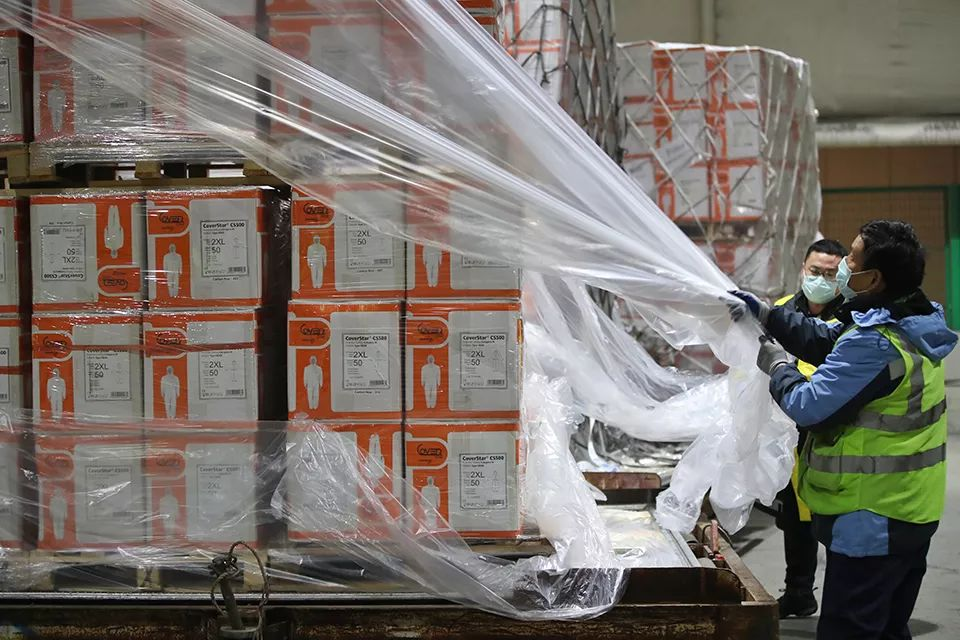

民间组织疯狂捐赠，为什么武汉的医院还缺物资？
原文链接 备份链接 「不是告急！是没有了！！」近两日，武汉协和医院、中南医院再次通过社交网络对外募集物资，对此，网友们纷纷发表质疑：全国各地都在往武汉捐医疗物资，物资到底去哪了？ 文 | 易方兴 郑丹 编辑 | 金石 采购难 没货，没货， …


*************▲*************1月28日凌晨1时45分，复星从德国采购第一批5万件防护服运抵上海。作为多个学校的校友企业，复星集团的采购团队“倾巢而出”。 （受访者供图/图）
全文共4518字，阅读大约需要10分钟。
这场战“疫”中，遍及世界各地的留学生、企业家、游客及海外华人华侨，为搜寻运送物资，自发编织起了一张庞大的采购、运送、收储、配送网络。而分散各地的校友会，成为这张网络中的关键节点。
像校友会这种组织对机构的点对点自愿服务，是捐赠运送医疗物资的“另一种选择”。
本文首发于南方周末 未经授权 不得转载
文 | 南方周末记者 汪徐秋林
责任编辑 | 张玥晗 吕宗恕
“武汉还未封城之前，我们就开始号召各地校友向华中科技大学附属的同济、协和医院捐赠第一批医疗物资。”华中科技大学校友会武汉分会秘书长方华告诉南方周末记者。
新冠病毒肺炎暴发后，医疗防护物资储备和供给成为湖北各大医院面临的最大短板，社会捐赠由此成为医院获得“救命”物资的新渠道之一。
南方周末记者采访发现，这场战“疫”中，遍及世界各地的留学生、企业家、游客及海外华人华侨，为搜寻运送物资，自发编织起了一张庞大的采购、运送、收储、配送网络。而分散各地的校友会，成为这张网络中的关键节点。
“为了尽快采购、分发物资，校友们都在尽力调动自己的社会资源。”中欧国际工商学院校友会深圳分会秘书许依楠告诉南方周末记者。不少非校友的社会人士也因为校友会采购的物资符合医用标准、运送渠道较为通畅、捐赠信息资金流向公开透明，选择校友会作为此次疫情的捐助渠道。据武汉大学深圳校友会秘书长李红亮计算，以个人名义给深圳校友会捐款的非校友，“至少有30%”。
1
“N95口罩一天一个价”，“20块一个根本不算贵”，“期间还遇到国内其他学校和企业的采购团队”，“直到下订单前都不确定到底能买到多少”，“就算买到也不一定能够成功运回国”，“即便运回国，也需要跟踪发放的全部流程”。
……作为校友分会秘书，许依楠向南方周末记者细数疫情暴发近二十天来她在对接全球中欧校友寻找购买防护物资时遇到的种种波折。她的手机里有各地校友的联系方式，北京时间每天凌晨，就是许依楠和全球校友开会碰头的时间。
自2020年1月23日湖北各城市陆续实施特别防疫措施以来，不断有医院因为医疗防护物资紧缺，向社会公开寻求物资支援。南方周末记者连线询问十余家湖北当地医院得知，N95口罩、医用外科口罩、防护服、酒精、护目镜等一次性医疗防护耗材，“非常紧缺”。
医疗用品标准高、需求量大，货源少，以3MN95口罩为例，只有1860、1870、9132三个型号能够投入医用，即便海外采购遇到了KN95、KF94、FFP3等型号，也不一定能与医用完全划上等号。“所以1860、1870、9132这三个型号，我们有多少买多少。”许依楠说。除此之外，能用于医疗防护的防护服、护目镜、一次性防护手套、药品，也被各地校友列入了采购清单。
在这场全球民间采购战“疫”中，许依楠扮演的角色是信息中转站和需求执行方。多位受访对象表示，除却拥有专业海外医疗采购团队和海外分公司的大型集团，国内企业和个人捐助者若想在全球找到医疗防护物资，就需要对接海外的关系和资源；而海外机构、企业和个人捐助者想将医疗物资尽快送达医院，也需要通过国内企业的社会关系，尽快走完报关、申报、检验、配送等一整套流程。
这远非一家机构、公司或个人精力所及。校友会这样将社会不同角色聚在一起的组织，却恰好能发挥它的优势。
武汉大学深圳校友会最初给中南医院的捐助物资的想法，就来自深圳两位卫生部门校友的建议。“当时口罩还很好找。”李红亮向南方周末记者回忆。这份向校友募捐的公告，经校友和社会转发，截至2月10日24时，已收到逾27万笔、共计2084万元人民币的捐款。“个人单笔大到100万元，小到1元，”李红亮说，“捐助的采购渠道不光来自深圳，也来自全国甚至海外。比如一位来自美国洛杉矶的校友，就给我们采购了一批防护口罩。”
“华科全球74个校友会分会，有差不多60个分会都给湖北和武汉捐助了医疗物资，包括来自北美、欧洲、澳洲、东南亚和南亚各个国家的分支机构。”华中科技大学校友会武汉分会秘书长方华说。
2
疫情暴发前，方华在华中科技大学校友会武汉分会当了十年秘书长。“新来的校友找到我想进校友群，我就问他想进行业、专业、班级的哪个群。”作为华科校友会系统中规模最大的分会，武汉分会的校友分散在武汉各行各业。平时，武汉分会活动以参观学习、举办行业分享会和休闲活动为主，校友会有自己的会长、理事成员、秘书长和公共账户，“大家都是兼职”。
武汉大学深圳校友会共有超过5万的在册人员，平时大家多按行业，划分为医学、金融、土木等群体。“校友自发组织活动，校友会就是服务，平时与学校偶尔有一些联系。”李红亮认为学校对校友组织“已经很重视”。
许依楠所在的中欧国际工商学院校友会则有更多来自各个行业的企业家。据介绍，学院鼓励企业家学员积极践行公益，但应对新冠病毒肺炎的支援并非学校强制。
“校友们有了捐赠的意图，我才把他们逐个对接起来。”许依楠回忆。
“学校只是撮合指导，具体的人员召集、商品采购、物流配送，都是校友们自发成立的。”1月22日，来自武汉、北京、深圳的校友们陆续提议给学校下属的同济、协和两家知名医院捐赠医疗防护物资，方华就把来自上述两家医院的专家和海外采购物资的校友们拉了个微信群，甄别海外医疗物资的型号。
后来，这批海外医疗防护物资的采购标准逐渐成为各医院认可的医疗物资受助标准。“没想到疫情会发展成这样，也没有想到校友会能在社会产生这么大影响力。”方华说。
南京大学发展委员会副研究员王俊在2019年发表的《我国大学—校友关系的发展转型探析》一文中分析，20世纪90年代以来，越来越多大学将校友群体视为学校发展的重要外部资源，二者关系运转围绕学校中心工作展开，“更加紧密，但尚未建立规范、有序、可持续的契约性关系”。
实际上，在校友会工作人员的组织联络下，校友的自发行动一定程度上也缓解了湖北当地医院物资短缺的难题。
湖北各市相继封城后，中欧深圳、湖北两个校友分会大年初一通过医疗供应商，在仙桃当地找到一间存储了20万只一次性医用口罩、150箱隔离服和手术衣的仓库。他通过校友群找到需要物资的医院后，就带着供应商和医院联系人前往仓库，在确认包括口罩、隔离服和手术衣等防护物资可用，“直接（一次性）付钱，直接捐赠。”
另一位深圳分会校友直接找到武汉蔡甸区一家还在生产84消毒液的工厂，买下工厂库存和出厂量，通过许依楠找到武汉和周边城市医院、垃圾场等需求单位，当天就将消毒液分发到他们手中。还有一次有校友为了让医院尽快派车来领，甚至把医院的通行证一并解决了。
华科武汉校友会大部分的校友志愿者把精力放在外来物资运抵武汉、通向湖北全省的分配运送上。每天从海外、省外筹集的医疗防护物资运抵武汉，校友们就将物资运到机场旁一校友捐赠的临时存储仓库，那里有来自全省各医院的工作人员在等待领取物资。“如果医院来不了人，我们就派人送过去。”
2月1日，华中科技大学武汉校友分会也成为协同管理武汉红十字会仓库的数家单位之一。十余名志愿者报名并前往红会仓库，“当时我们能做的就是搬货和整理，有人打趣‘都是些硕士博士在送货’。”方华回忆。
而校友自己的配送，方华计算，从批文通关、飞机落地到拆包再到送到医生手上，最多只花了21个小时。
3
武汉大学、华中科技大学校友会的捐赠行为能被非校友人群关注，在于2020年1月23日以来，他们将所有捐赠信息及物资去处一一向社会公开。
武汉大学深圳校友会公开了二十天来所有物资接收医院、物资名称、数量、单价、物流动态与其他补充信息的条目。此外，每一笔捐款的交易单号、交易场景和交易状态在网络上也都有据可查。华中科技大学武汉校友会则在微信公众号里公开了所有的转账明细和发放物资条目。
李红亮介绍，信息公开的工作只需由一人专职完成。前期十几个采购小组把采购信息、合同信息、物流信息汇总到了财务小组，财务小组再去跟踪付款流程，最后再由一人汇总公布所有财务信息、合同信息、物流信息等。“这是每个机构的管理者都必须要具备的财务安全制度意识。”
无论李红亮或方华，都承认自己没有接受过相关基金会管理的培训。“我们就是按照企业的方式去管理，信息要公开的一律公开，要执行的一律尽快执行，要筹建什么部门小组就尽快筹建，要宣传就宣传。”方华说道。
她发现，越来越多并非校友群体，例如珠海湖北商会，也开始通过华科武汉校友会进行捐赠。“除了校友的号召力，我们集体购买、高效分配、信息公开的行为也赢得了他们的信任。”
实际上，涌向校友会的资金如何使用，成为校友会在过去二十天里的现实挑战。
方华介绍，在武汉当地物资运送压力较大的情况下，物资采购更多由北京、上海、深圳的校友分会负责。“但我们也会统计医院求助信息，有捐助资金，就尽量均衡给之前没有覆盖到的医院。”方华说道。
李红亮手里则有一份湖北当地140多家医院的联络表，在思考如何给各求助医院配送医疗物资时，校友会工作人员除了比对需求，还需考虑其他因素：“孝感、黄冈疫情严重，物资要有所倾斜；而对同济、协和这种大医院，就会捐赠给他们更多的医疗物资。”
在物资最紧缺的几天里，资金怎么花才不浪费，更让工作人员为难。捐助人会关心捐赠的资金用得好不好。“38元一个的N95医疗口罩、390元一件的医疗防护服都遇到过。”李红亮回忆起没有完成的采购时说，两千多万的公众募集资金，不能不花，也不能乱花，“其实是一种压力”，为此，校友会谢绝了一笔500万元的捐赠。
为了回应捐助人的质疑，武大深圳校友会的工作人员甚至要将购买医疗设备的合同价格、过去同一型号的招标价格、中标价格一一列举对比。
“目前已公布执行的资金有1100多万，包括还未付账的合同则执行了1500多万。”2月11日夜里，李红亮计算道。
4
将近20天的工作，李红亮坦言“很疲惫”。
方华一开始也以为号召校友捐赠医疗防护物资的活动“最多三天就可以结束”。许依楠表示，她偶尔也想这样的志愿活动是不是该结束了，可一觉醒来，她又开始对接分散在全球各个时区、还在不断寻找医疗物资并想办法捐助给湖北的校友。
来自民间的捐赠数字，同步在各大校友会间快速增长。
据南方周末记者不完全统计，疫情暴发以来，长江商学院各校友组织和班级向疫区累计捐赠资金和物资超过1290万元，长江校友企业捐赠资金和物资则超过28亿元；北京大学校友会则自2020年2月8日起发起“百万口罩行动”，号召全球北大校友，直接向湖北省内17个地市州及其所辖县区医院捐赠100万个医用口罩；中欧国际工商学院校友总会公益联盟、爱心联盟在2月10日号召分布在海内外130个校友分会和俱乐部的两万四千余名校友，展开新一轮公开筹款活动。
与此同时，不断有一线防疫医院也开始第二次向社会公开寻求医疗物资渠道。
“这两天（2月9日）还会有一大批物资要运送到武汉。我需要将它们分发到各个医院。”方华细数自己手机中置顶的微信对接群。
校友会、志愿者协会等组织对医疗机构的点对点运送，成为这次防疫过程中医疗物资捐助运送的“另一种选择”。
但这并非校友会的初衷，方华说：“我们本来是补位的那群人。”
中国社科院企业社会责任研究中心主任钟宏武也认为，尽管此次战“疫”不少企业和企业家们都有突出表现，但他们更应该以及早贡献自己的专业能力，如建筑公司抓紧建造医院，物流公司铺设绿色通道，医药公司加紧研制药品，医疗设备公司抓紧生产医疗产品。“不涨价、保证量，就是最大的社会责任。我倒觉得，捐赠的重要性反倒是第二位的。”
方华表示，校友会下一步也希望从捐赠物资配送的压力中抽离，专注做一些校友们擅长做的事。“比如牵头撰写调研报告，呼吁公众和政府关注医护人员的住宿问题。”她希望有更多各行各业的校友站出来，联手解决医护人员隔离和住宿的实际困难。
而许依楠建议校友分会将关注点转向了民用口罩。她发现，2月10日各地企业陆续复工后，很多企业的这一防线出现重大缺口。

征集

《南方周末》现向所有身处新冠肺炎一线的读者公开征集新闻线索。我们欢迎武汉及周边城市医患联系记者，提供防疫前线的一手资讯，讲述您的新春疫情见闻。若您不在武汉，但您身处之所也有与疫情相关的重要新闻线索，亦欢迎您与我们分享。疫情仍在蔓延，南方周末将执笔记录每位国人在疫情面前的希望与困境，与广大读者共同面对疫情。祝愿所有读者朋友们，新春平安。线索可直接给本篇文章留言，格式为：【线索】+内容+您的电话（绝对会对您的个人信息保密）
戳击下面图片 继续阅读专题


原文链接 备份链接 「不是告急！是没有了！！」近两日，武汉协和医院、中南医院再次通过社交网络对外募集物资，对此，网友们纷纷发表质疑：全国各地都在往武汉捐医疗物资，物资到底去哪了？ 文 | 易方兴 郑丹 编辑 | 金石 采购难 没货，没货， …
原文链接 备份链接 在这场抗击新病毒的战争中，一线医护人员不得不为自身防护揪心，他们和医院、捐赠人一起被迫卷入一场医疗物资的募捐赛 文 |《财经》记者王丽娜 辛颖 编辑 | 王小 这是历次疫情中，一线医院大批量第一次直接向公众募捐，也是 …
原文链接 备份链接 他觉得自己像一个巨大的电插座，身上插满了孔，求助信息和资源提供信息被一起插到他身上，他再来牵线对接。 文 | 谢婵 李叙瑾 编辑 | 小豆 22岁的梅浩宇窝在出租屋里，吃光了13包泡面和3大袋零食，每天睁开眼睛，他就开 …
原文链接 备份链接 向风暴眼输送防护物资并非易事武汉市中心医院医生发布微博求助，希望社会各界捐物资。图源：微博截图 2月12日晚，武汉中心医院的一位医生在微博发出求助。 这位身穿防护服的医生对镜头说，医用N95没有了，只能戴工业口罩，医 …
原文链接 备份链接 【财新网】（记者 包志明）2月3日下午16时，31岁的货车司机王辉在上海浦东机场附近的货仓装满物资，就和弟弟的车一前一后驶上了开往武汉的救援之路。 因为新冠肺炎疫情的发展，武汉已经“封城”11天，900万武汉居民的 …